(Click to enlarge)
I have finally got myself to write a proper introduction of a project integrating modern 3D game engine into Blender (almost 2 years in development now)!
The 'code-name' of project is Cycles Game Engine - intention was to express it is based completely on nodes (like Cycles Render does - the Blender path-tracing renderer) and offer a familiar name. Ultimately the name will likely change, to not cause any confusion.
As I started gathering the feedback from Blender users, the response was tremendous! I have been overwhelmed by the amount of positive comments. As usual with 3D engine development, there are also 'realistic' voices opposing it. We live in ages when you are not advised to make serious 3D engines, as you can no longer match the big teams and unlimited resources the giants possess.
3D game development is such a broad topic, it deserves to explore and discover new ways of creating. Of course chasing a feature list of the giants is a dead-end. If you are going to reinvent the wheel, don't make it rounder, change how it works instead, even at a risk of failing terribly!
Blender is a master piece of open-source with extremely active development. You can file a bug report and get it fixed in less than a day. The realtime / interactive content in general is a huge part that Blender could excel at but is lacking currently - many companies find a great use of realtime engines now. I want a viable open-source alternative on this front, that is all this project is about. There is no need to dominate the world as long as people using it enjoy it.
In conclusion, the support has been fantastic. There is already so much enthusiasm and passion around the project. I have been carefully gathering the feedback to know what are the crucial things people are looking for. Being a game engine programmer addict for most of my life, I have lurked everywhere for all kinds of engine programming wizardry that is going on these days. As the project moves forward, it is reaching time to open up!
I loved the idea of common ground for a complete game authoring - from content creation to interactive game world building. Blender integration is the sole point of this thing, offering a unique workflow. There is a huge ecosystem around Blender, you can use existing add-ons to generate architecture and then turn it into interactive simulation straight from Blender, potentially with support for virtual reality. Edit / sculpt / paint the models without hassle. Adjust rigged mesh animation on the fly. Use terrain / trees / foliage generators for landscapes, animation creation helpers, texture bakers, LoD generators, geometry modifiers... You might easily write custom object generators using existing Blender API or any tools that might suit your project to speed you up. The possibilities are endless.
This is something that well established engines are seriously experimenting with too (ie. actively spending resources on it) - either by building integrated tools or by specialized plugins to create meshes in-engine. With that said, while Blender still is an essential tool for working with 3D game engines, in the future it may be getting more competition from game engines themself, at least for small-scale modelling.
The engine needs to be able to run on desktops, consoles, mobile and web with no compromises. It needs to run on a platform announced tomorrow. The common approach is to tie the renderer to OpenGL/ES/WebGL. For games, this is disastrous choice today. There are lots of different graphics APIs now, in order to maximize portability and performance on each platform we need to take advantage of this. What if one of the major platforms decide to axe OpenGL in favor of Vulkan/Metal/D3D12 in the future? Refactoring these things in an existing code-bases not prepared for this is a huge and painful task.
The core of the engine has been developed will all this in mind, making it possible to add new targets/graphics APIs without rewriting existing code. There is already support for OpenGL/ES/WebGL, D3D9/11/12, Metal and Vulkan. The output to JavaScript is very straightforward making WebGL first-class citizen, preventing bloated file sizes and slow performance that regular engines compiled from C++ face.
One of the goals was clean, flexible and powerful render system. 3D graphics features are not an afterthought. You want to spend as little effort to achieve 'wow, you did that?' effect instead of 'it looks like poop!'. While there is still a horde of features to implement, the process is most of the time very straightforward.
A standard metalness PBR workflow is used, which makes it possible to easily exchange content with other game engines or import content from your favorite PBR enabled tools. There is nothing new to learn for game artists, which are already accustomed to this.
On top of that, you can render each scene with Cycles Render path-tracer too, since the materials are compatible with subset of regular cycles nodes.
The engine is built on Kha - the most exciting technology I ever discovered. It handles all the low-level hard work flawlessly, forming a rock solid base. There is a 'generational' graphics/audio API pattern, ensuring we always use the most relevant technology. It is completely self contained - there is no any sort of dependency hell. It goes even further by integrating a build system with project generators, powerful shader compiler, asset optimizer, IDE with full debugging support, ...
Python is used to write Blender add-ons and it excels at doing so. For actual game logic, Haxe is used - a language at a level of C# or Java. This is the key to superior portability over purely native C++ engines or purely JS engines, while still maintaining good performance. We can still utilize C++ code for native targets, and JS for the web respectively. For visual programming a system of logic nodes is available.
While still having ways to go, a decent set of features is already integrated out of the box. Bloom, gaussian blur, lens flares, volumetric fog, tone-mapping, lens distortion, vignette, depth of field, FXAA, motion blur, screen space ambient occlusion, ray-traced reflections and more are available. Additionally, it is easy to write custom shaders using modern GLSL.
Skinning can be performed either using GPU or CPU, although currently in a basic form. Particles are rendered using GPU instancing in a single draw call.
Render path is fully programmable, with forward and deferred path included. Considerable effort has already been placed on a deferred renderer optimization. At a minimum it can run using just 2 float textures(or half-floats at a cost of precision), using multiple render targets. Position is reconstructed from depth using ray interpolation, octahedron encoding is used for normals and metalness / roughness is packed into single channel. Base color, mask and occlusion are also stored.
Fully HDR enabled lighting:
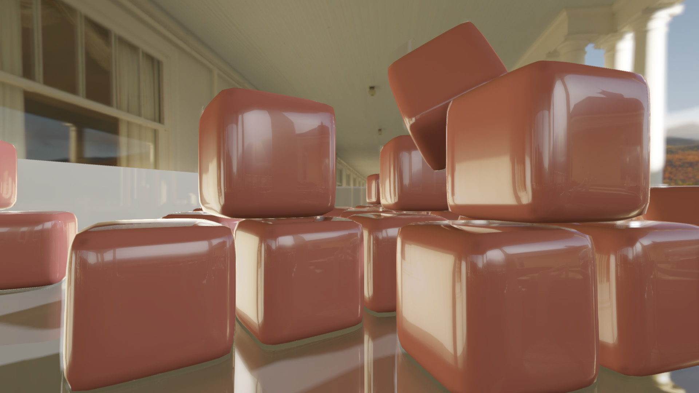Video textures with real-time ray-traced reflections:
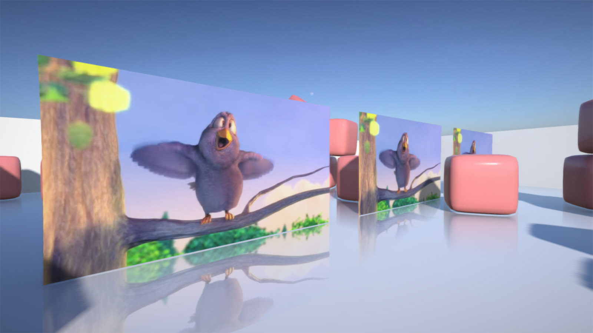Basic bloom, lens-flare, vignette and lens distortion:
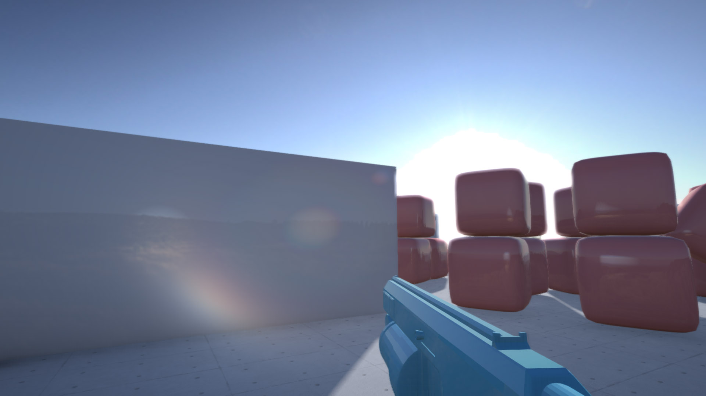Interactive 3D GUI:
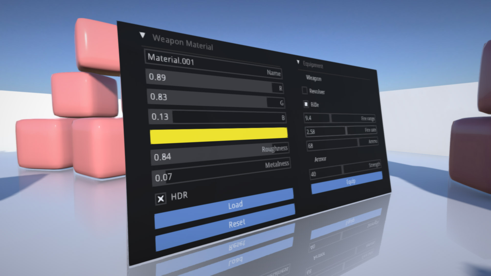This is one of the most crucial parts of the engine. Since the render path is programmable, we can assembly it visually using nodes - it is then easy to see how the frame is being constructed, edit it, change the shaders contexts or further optimize it.
For basics there is no need to alter this, as deferred and forward paths come bundled. You can edit existing paths to suit your needs, or use different paths on different targets.
Let's take a look at the simplest path. We clear the color and depth and do a geometry pass.
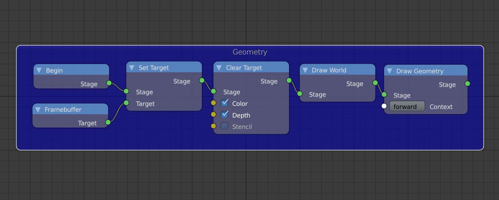'Draw World' is used to draw environment map for the background. The world nodes may look like this.
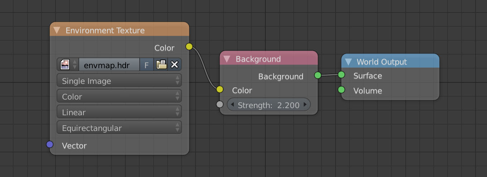If we are to draw shadows too, we render a shadow map in advance and then simply attach it when doing a forward geometry pass.
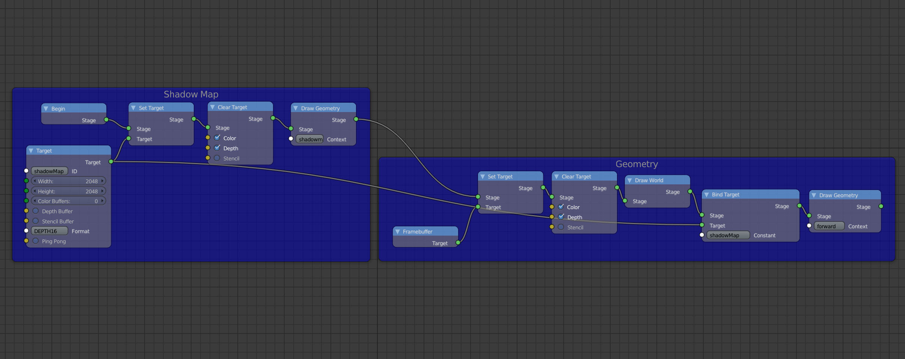A complete deferred render path with tons of post-processing may look like this. There are quite some steps now, but still easily manageable.
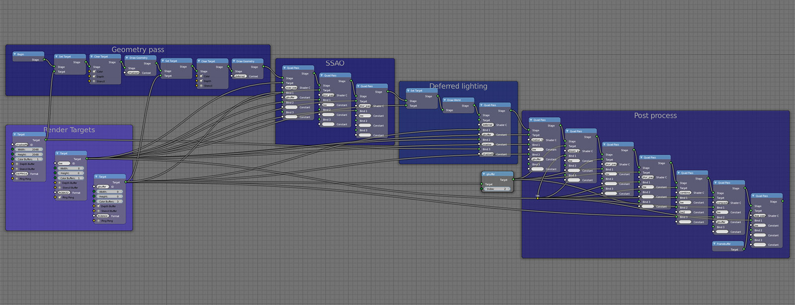If you are familiar with shader programming, you may know that we need to use two render targets for various post processing effects. We can simply check the 'Ping Pong' box below and act like it is possible to draw to and read from render target at the same time. You can also see we can configure any render target, even with MRT support.
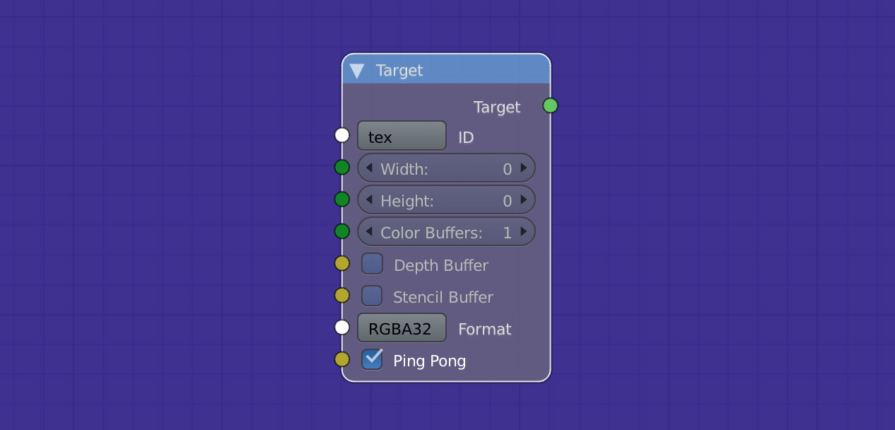Using this approach and a bit of preprocessing, I created a proof of concept path-tracing renderer. Every other part of the engine is still in place - physics, logic, portability. It's important to note that this is only concept, no arbitrary geometry is supported, it only does spheres, cubes and planes for now. And it's still noisy of course. The path can be improved in the future independently, but I would also like to explore mixing the rasterized rendering with path-tracing for some effects.
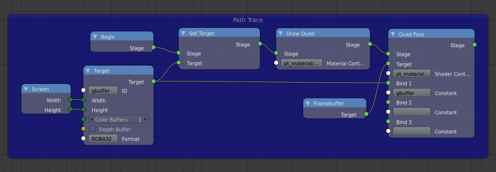And the result, rendered in real time.
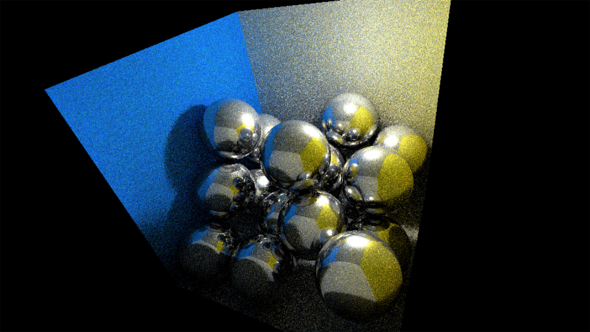Another greatly important part, the material system! We use a subset of standard Cycles nodes, which you may already be familiar with. If the material is usable in game engine, you can be sure it is also compatible with Cycles Render. This is not yet true vice-versa, as real-time rendering needs to be more constrained to achieve good frame times.
The most basic material with Diffuse BSDF node used as default in Blender will work just as it is.

We employ a bundled node group to setup a PBR material. It is just a single node where you can hook your textures, or set the values directly.
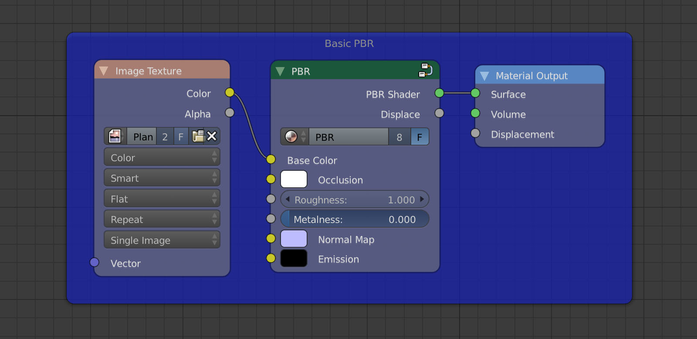This time taking transparency into account, using the alpha channel of base color.
We can also use math or helper nodes, like a checker texture. PBR node group is working together with Cycles Render, as you can see below.
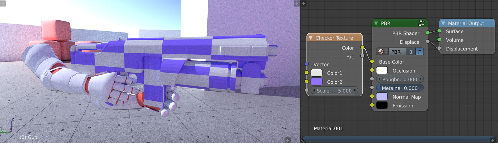In order to consume all the materials in efficient way, we process them at build stage.
First, we build the render path nodes attached to camera, to figure out which shaders are referenced in the scene. If we are running for the first time, Python script is invoked which analyzes used shaders and creates all needed shader variants and description files, which serve as a communication interface with the renderer. At this stage, thousands of shader variations may be pregenerated, which are then ready to be used by materials.
Next, we go through all the objects and examine used material nodes. We choose a shader variant that suits the object perfectly. For example if object contains animation, we choose a shader variant with skinning included.
When exporting object data, we export it based on the materials used - for example if normal map texture is attached, we precalculate and export tangent geometry data. If they are not needed we skip them to save space.
Finally, we append all used shader files and referenced resources to the project file, to include them in build process. These shaders are then picked up by shader compiler called krafix. It parses them into SPIR-V and outputs shaders usable by the platform we are targeting - various versions of GLSL, ESSL, HLSL, ...
At this stage, we also precalculate radiance and irradiance maps. This is done using a brilliant open-source tool CMFT. Below is an example of irradiance map.
Now that we can render the scene with ease in real-time, it is time to make it feel alive. For each object you can specify a set of traits (ie components), which can be used to attach logic nodes, instantiate Haxe classes, setup animations, ...
A set of standard traits is included, such as 'FirstPersonController' to simulate FPS camera movement, or 'VehicleController' to setup vehicle with physics. Traits are also easily shared among the objects.
Behind the scenes all traits are translated into Haxe. It basically means that when you are composing logic nodes, you are creating Haxe code which in turn gets transpilled into C++ or JS (or others, based on target).
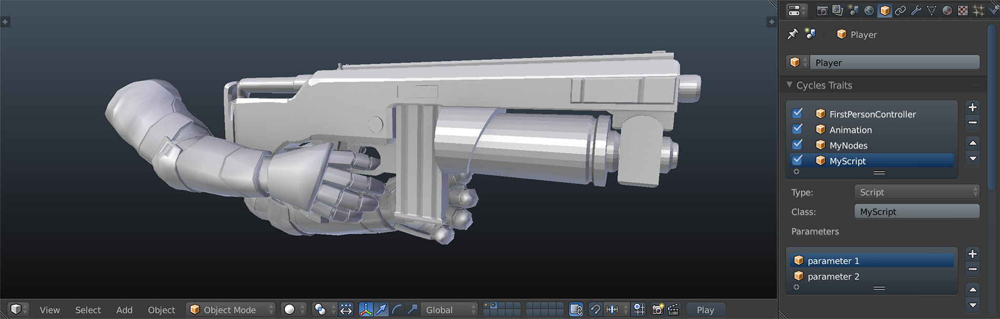Small example of logic nodes. In this case nodes just move the target object along X axis using sine value, and rotate it around Z axis. This is the visual way of composing logic.
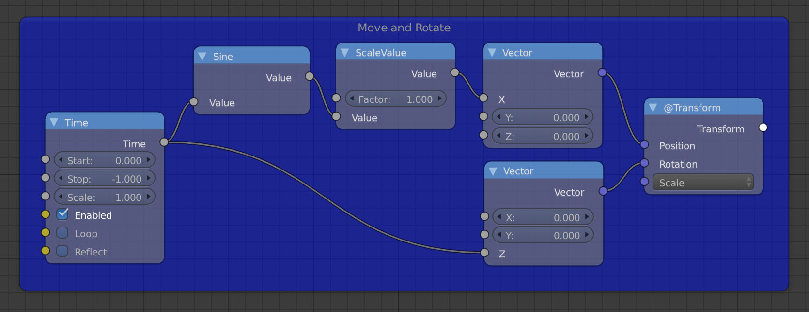In order to make development iteration fast, we need to preview the game as quickly as possible while making the experience feel integrated with the environment.
I explored the possibilities in exhaustive detail - in the end I discovered 4 ways to play the game directly 'in' Blender, I got all of them to work to some degree.
1.) Integrate Kore, the C++ foundation of engine into Blender, which would act as a game interpreter. The game sources are then compiled to Python which communicates with the interpreter.
+ Fast
- Requires modified Blender build
- Hard to manage
- Can alter Blender stability
2.) The second approach is based on the BGL module of Blender, which exposes OpenGL API. Whole game gets compiled to Python and hooked to BGL. Unfortunately BGL is not complete and there are some issues with it.
+ Runs in vanilla Blender
+ Can not alter Blender stability
- Slow
- Hard to manage
3.) The engine can run at extraordinary speeds in JS. What if chromium was integrated directly into Blender which would then run the game? I integrated Chromium Embedded Framework, just to figure out rendering into an existing context is far, far from straightforward.
4.) I expanded on the previous idea. What if we could run standalone electron app exactly how we need it? Turns out you can easily scale and reposition the window, run it frameless, always on top, hide in taskbar, and also hide the whole window conveniently. Blender just needs to communicate the game player area coordinates using Python and send those to electron. As a bonus, we can use integrated IDE as electron player, so the size of SDK is not affected at all!
+ Runs in vanilla Blender
+ Can not alter Blender stability
+ Fast
+ Easy to manage
- A little weird
The number 4 is a winner right now. There is another target coming into Kha, which may improve on this even more.
There will be a separate post focusing purely on performance and benchmarking with respect to different targets. The shaders are already after a few rounds of optimizations, cutting the frame time of deferred renderer almost in a half of original. Integrated Intel HD 5100 card is capable of running the 800x600 FPS template at 60 FPS in a web browser, which is already very satisfying for relatively slow card. As always, there is still plenty of improvements to do.
Blender add-on suite is licensed under GPL. The core of engine which Blender add-on feeds data into is licensed under LGPL, which is less restrictive. The intention is that if you fork it you have to make it public so others can benefit from it, but you can do whatever you want with your game.
This is it! I summed up some of the most important parts. Care will have to be placed on assets management, viewport rendering in Blender and danger of clutter. Further progress will be made in following areas.
Current focus:
Features being developed in Kha:
I am starting to look for ways to fund the project - until a reasonable way is found, the engine may be paid. This may limit the audience initially, which is not a bad thing as there will be lot of things to fix. Eventually, the plan is to release for free and fund using other means. There will be no separate paid modules or any splash screen nonsense. Users should be able to include engine logo at their own will if they are proud to do so. The engine will always stay open-source. First release will be hopefuly ready by the end of May, aimed purely for curious minds and testing.
The rendering system itself is not tied to Blender and will be also released separately, in a hope to aid in realtime 3D development in Kha. All the low level changes that are used in engine are already pushed back to Kha, so you may already benefit from those - just start being a Kha developer today :) These are absolutely great times for GPU programming!
If you are by any chance interested in contributing & testing & feedback, get in touch!
Some recordings from the development to finish off.
{kind=link}